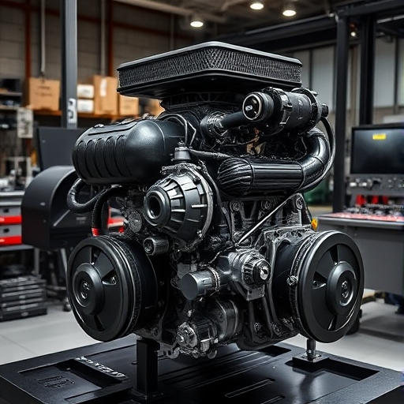
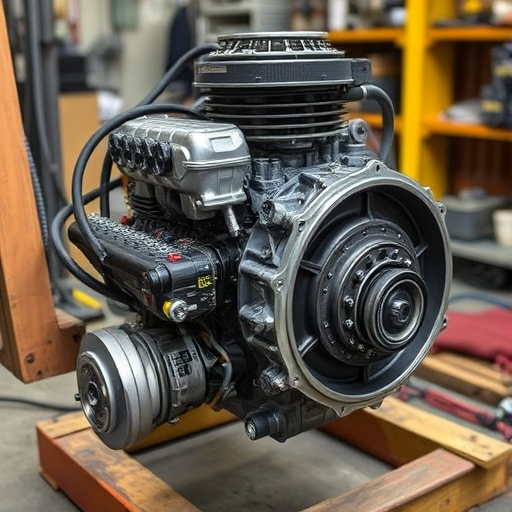

Заміна двигунів

Заміна двигунів для електромобілів Tesla – це складний процес, який вимагає високого професіоналізму та сучасного обладнання. Ми гарантуємо якість і надійність кожної виконаної операції.
- Повна діагностика системи приводу.
- Демонтаж і встановлення нових двигунів.
- Перевірка системи охолодження.
- Налаштування і тестування після заміни.
Наші фахівці мають багаторічний досвід у роботі з електромоторами Tesla. Ми використовуємо лише сертифіковані комплектуючі, щоб забезпечити бездоганну роботу вашого авто після ремонту.
- Заміна основних та допоміжних електромоторів.
- Ремонт або заміна редукторів приводу.
- Контроль технічного стану всіх вузлів.
- Гарантія на всі виконані роботи.
